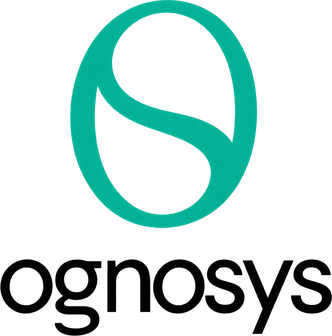

by ActalanVotre prospérité, notre priorité.
Ognosys, membre du groupe Actalan, conseille les entreprises sur deux terrains : l’économie symbiotique et régénérative, et le numérique responsable, accessibilité numérique comprise.
 Économie symbiotique · Numérique responsable
2
spécialités
2
labels
6
ateliers
Économie symbiotique · Numérique responsable
2
spécialités
2
labels
6
ateliers
Nos deux spécialités.
Des experts RSE, un représentant de label AFNOR, des chefs de projet et des directeurs de programme.
 01
Économie symbiotique et régénérative
Vers une économie innovante, écologique, solidaire et régénérative : diagnostic, accompagnement du dirigeant ou du CODIR, plan d’actions.
AFNOR SPEC 2315Spirale symbiotiqueStress test du business model
→
01
Économie symbiotique et régénérative
Vers une économie innovante, écologique, solidaire et régénérative : diagnostic, accompagnement du dirigeant ou du CODIR, plan d’actions.
AFNOR SPEC 2315Spirale symbiotiqueStress test du business model
→
 02
Numérique responsable
Vers le label Numérique Responsable, accessibilité numérique comprise : diagnostic, accompagnement du dirigeant, de la DSI ou de l’équipe projet, plan d’actions.
Label Numérique ResponsableAccessibilité numérique
→
02
Numérique responsable
Vers le label Numérique Responsable, accessibilité numérique comprise : diagnostic, accompagnement du dirigeant, de la DSI ou de l’équipe projet, plan d’actions.
Label Numérique ResponsableAccessibilité numérique
→
Ognosys est membre de l’association Les Ateliers symbiotiques.
Un diagnostic, un accompagnement, un plan d’actions.
La même démarche pour l’économie symbiotique comme pour les labels.
Des séminaires où l’on travaille, pas des diapositives.
Séminaires collaboratifs pour dirigeants et managers, menés avec un partenaire spécialisé. Participatifs, pragmatiques, orientés résultats, adaptables.
Nous accompagnons aussi.
Nos secteurs, nos compétences.
Ce que nous avons déjà mené.
 Sensibilisation
économie symbiotique
Gestion documentaire · Banque
Faire découvrir les pratiques et les principes de l’économie symbiotique
Sensibilisation
économie symbiotique
Gestion documentaire · Banque
Faire découvrir les pratiques et les principes de l’économie symbiotique
 SPEC 2315
diagnostic AFNOR
Gestion documentaire · Banque
Situer la maturité du modèle économique au regard de l’AFNOR SPEC 2315
SPEC 2315
diagnostic AFNOR
Gestion documentaire · Banque
Situer la maturité du modèle économique au regard de l’AFNOR SPEC 2315
 300
collaborateurs accompagnés
Grand assureur · Accessibilité numérique
Intégrer l’accessibilité aux parcours digitaux : méthode, formation, outils
300
collaborateurs accompagnés
Grand assureur · Accessibilité numérique
Intégrer l’accessibilité aux parcours digitaux : méthode, formation, outils
 Green IT
trois modules de cours
École de commerce · Enseignement
Enseigner le coût caché du numérique, le Green IT et l’impact de l’IA
Actalan
notre propre politique RSE
Actalan · Politique RSE
Appliquer à nous-mêmes ce que nous conseillons
Green IT
trois modules de cours
École de commerce · Enseignement
Enseigner le coût caché du numérique, le Green IT et l’impact de l’IA
Actalan
notre propre politique RSE
Actalan · Politique RSE
Appliquer à nous-mêmes ce que nous conseillons
Clients anonymisés.
Les mêmes exigences de méthode et de preuve.
Ognosys s’appuie sur les équipes d’Actalan : pilotage de programme, données, conduite du changement. Un chiffre carbone se justifie comme un chiffre comptable.
Découvrir Actalan →Consultants, indépendants ou salariés.
Pour rejoindre Ognosys ou parler d’un projet, écrivez-nous.
contact@ognosys.fr →